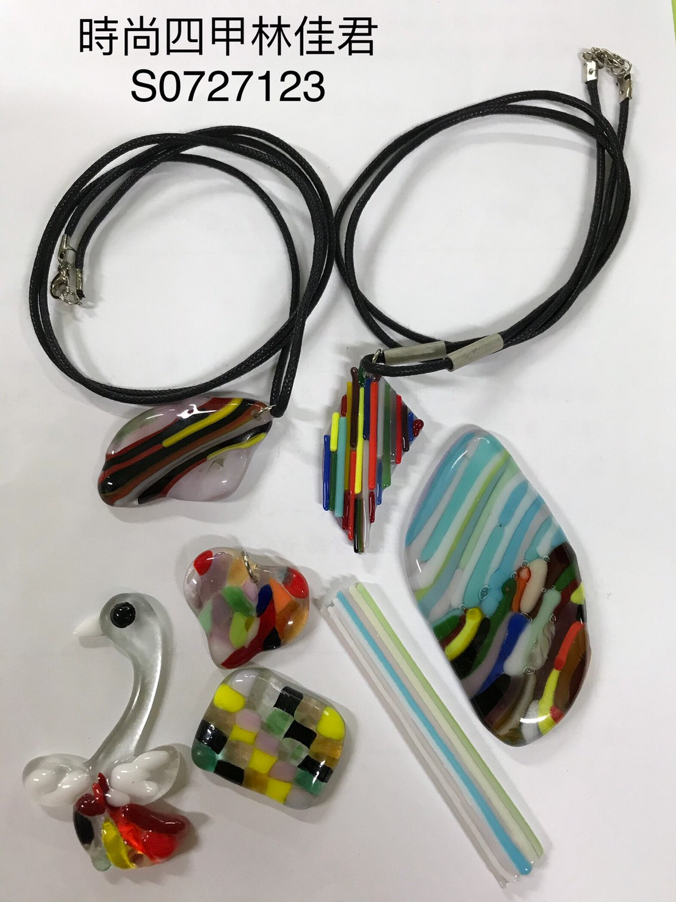
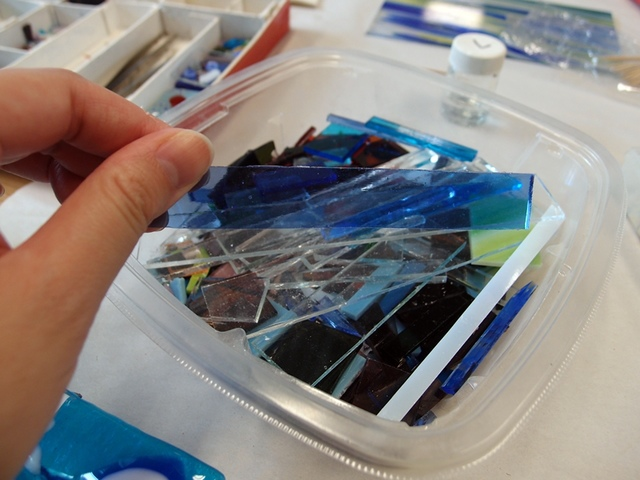
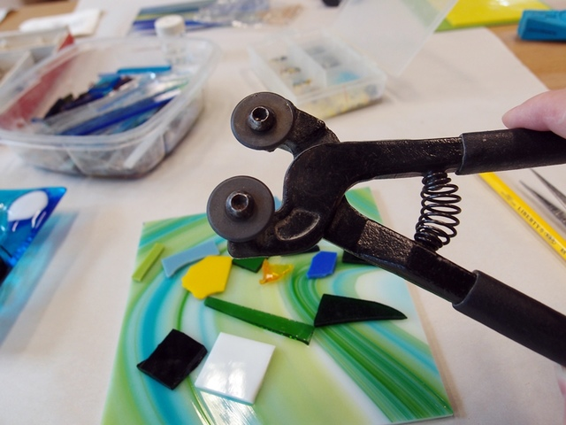

飾品&吊飾
就先把想要的構圖通通放在玻璃板上，可以分散放，
也可以堆疊起來，或是上頭在加蓋一片透明的玻璃片，
因為我想要做一個小項鍊吊飾，所以，我設計的花樣就不再加一層透明玻璃。
就一角一角剪成自己要的大小，形狀的部分真的比較難掌握，因為玻璃材質較硬，跟剪紙不一樣，
剛開始檢的時候，小玻璃碎塊都還會四處噴，剪多次一點後就比較順手，
邊邊角角其實也不用太在意，因為玻璃經果高溫熔合後，那些尖銳的角會修飾變圓滑，
用玻璃熔合創作最難的地方在於，要運用想像力。
想像製成後的樣子，然後再構圖，老師說其實也沒那麼複雜，
有時只要挑幾個簡單的色系堆疊，熔出來的效果也會出乎意料的好呢！



專題
木工
染布
心得